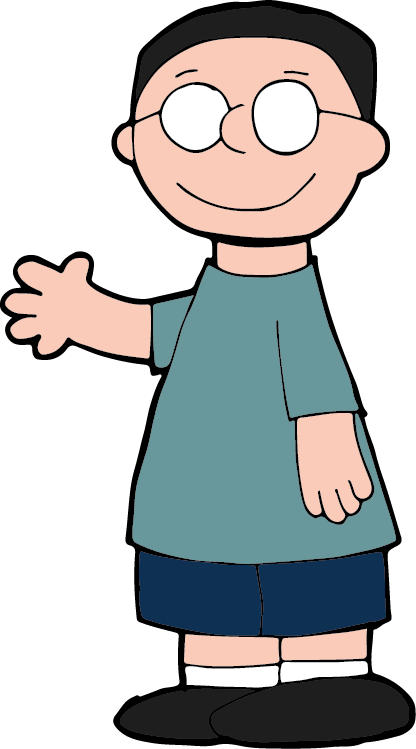

"Lone Defender"
Photoshop
7200x5400
9/4/2017
This image is essentially what my escape from reality looks like. Me, in a fantasy/mythological realm, defending my home or the homes of my fellow villagers from some great monster. Each image separately depicts one or more aspects of someone's fantasy. Together, however, they make up my fantasy. If I had to put this out into the world for others to view, I would imagine it would live as a poster for an upcoming video game or movie. That being said, it would be printed in a relatively large format to be seen from a decent distance away to attract potential viewers/buyers.
"Wake Up"
PowerPoint
9/19/2017
The original piece was intended as a poster, still and left to the imagination of the viewer as to what it was about. After the conversion into a series of images it's no longer up to the viewer to determine what happens next. The piece has been given a message, or story which the viewer witnesses. It's no longer my escape from a world of pain and struggle, but is instead me returning to the reality of my situation whatever that may be.
"Coconuts?"
PremierePro
3:07
10/3/2017
I tried to recreate this clip with as little interference as possible as to both stay true to the brilliance of the movie but still satisfy the assignment. All the edits I made were designed to be humorous but stiff feel like a Monty Python movie. Like one of the other scenes in the movie where the audience sees a knight charging into a fort but repeatedly restarts the charge, the edits used in this piece are to create a feeling of everything is both normal and different at the same time.
"Deeply Alone"
PremierePro
3:02
10/18/2017
This is a compilation of audio tracks I recorded at SF:MOMA, the SJSU dining commons, and the SJSU student union, and a song I found on YouTube with the creative commons filter. I envisioned this piece to evoke a feeling of being surrounded by people but still feeling completely alone. "Alone in a crowd".
"Connected"
PremierePro
0:57
9/24/2017
This project was intended as a reference to the fact that everyone's lives are intertwined with each other through technology. It's supposed to illustrate how we are all connected to each other to the point where we are practically manipulating ourselves through each other.
"Fantasy Gamer's Life"
PremierePro
2:43
10/16/2017
This piece was designed to be a sort of "compare and contrast" between the life of a gamer and the life of the game character. I really liked the look and feel of the "kill moves" from Skyrim. They gave me a sense of power, almost like I truly was a warrior of legend meant to save the world from the evil dragons. All while in reality I was sitting in my room, doing nothing even resembling medieval combat.
"Average Windsday"
Illustrator & PremierePro
0:13
3/2/2017
This piece was intended as an attempt to recrreate the life like motion of a leaf blowing in the wind. I recieved a critique from animators from Pixar and WB Animations, through my professor, that gave me quite a complliment saying that if I had jsut a couple more positions for the leaf itself it would be perfect.
"Just Another Tuesday"
Illustrator & PremierePro
0:18
5/11/2017
This was my first attempt at animmating in Adobe Animate. It was intended as a walk cycle with a head turn and jump included, and in that regard I think I succeeded. It's still rough and needs some work on both the animation and the background but as a first attempt I'm pleased with the outcome.

"Peanuts"
Illustrator
39.8kb
2/28/2017
This piece was created as a study of if I could recreate someone else's art style. In this case I drew myself in the style of Charles Schulz's Peanuts Gang.
"Joe"
Illustrator & Photoshop
292kb
11/8/2017
This is an on going project that started as a whim to draw my family members as "superheros". It has since expanded into trying to create characters to inhabita world that I hope to turn into a web series, hosted either on Deviant Art or YouTube.
"Repetition as Change"
Photoshop & PremierePro
0:28
8/22/2018
This was a delve into the idea of making change through repetition.